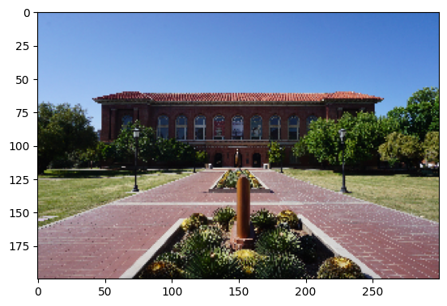

import pandas as pdLecture 4.2 | Data Preprocessing ( Tabular Data, Audio and Image)

1. Tabular Dataset
Audible Dataset
| Column name | Description |
|---|---|
| name | Name of the audiobook |
| author | Author of the audiobook |
| narrator | Narrator of the audiobook |
| time | Duration of the audiobook |
| releasedate | Release date of the audiobook |
| language | Language of the audiobook |
| stars | Rating and number of ratings of the audiobook |
| price | Price of the audiobook in INR |
src = https://www.kaggle.com/datasets/snehangsude/audible-dataset
audible_df = pd.read_csv('data/audible-dataset/audible_uncleaned.csv')
audible_df.sample(2)| name | author | narrator | time | releasedate | language | stars | price | |
|---|---|---|---|---|---|---|---|---|
| 47778 | Ultratumba: Recopilación de terrores y pesadillas | Writtenby:MiguelAguerraldeMovellán | Narratedby:NachoGómez | 4 hrs and 8 mins | 04-10-21 | spanish | Not rated yet | 268.00 |
| 1361 | Building Log Houses | Writtenby:HighlightsforChildren | Narratedby:HighlightsforChildren | 1 min | 16-08-18 | English | Not rated yet | 46.00 |
audible_df.sample(10)| name | author | narrator | time | releasedate | language | stars | price | |
|---|---|---|---|---|---|---|---|---|
| 24142 | Jesus of Nazareth | Writtenby:PopeBenedictXVIJosephRatzinger | Narratedby:NicholasBell | 12 hrs and 4 mins | 31-10-08 | English | 5 out of 5 stars1 rating | 937.00 |
| 84030 | Die Fowl-Zwillinge und der geheimnisvolle Jäger | Writtenby:EoinColfer | Narratedby:RobertFrank | 9 hrs and 12 mins | 29-11-19 | german | Not rated yet | 703.00 |
| 84845 | A Taste for Love | Writtenby:JenniferYen | Narratedby:JosephineHuang | 8 hrs and 46 mins | 02-02-21 | English | 4.5 out of 5 stars4 ratings | 1,256.00 |
| 43863 | Confessions de Mademoiselle Sapho | Writtenby:Mathieu-FrançoisdeMairobert | Narratedby:FabienneProst | 1 hr and 16 mins | 07-09-11 | french | Not rated yet | 375.00 |
| 36394 | Disarming the Narcissist (Third Edition) | Writtenby:WendyT.BeharyLCSW,JeffreyYoungPhD-fo... | Narratedby:JoanaGarcia | 8 hrs and 56 mins | 30-11-21 | English | Not rated yet | 586.00 |
| 61512 | #gemeckerfrei | Writtenby:UliBott,BerndBott | Narratedby:UliBott,BerndBott | 5 hrs and 55 mins | 29-07-21 | german | Not rated yet | 535.00 |
| 20982 | The Short, Strange Life of Herschel Grynszpan | Writtenby:JonathanKirsch | Narratedby:SimonPrebble | 9 hrs and 16 mins | 20-12-13 | English | Not rated yet | 836.00 |
| 81887 | Rich Dad's Escape the Rat Race | Writtenby:RobertT.Kiyosaki | Narratedby:LukeDaniels,NickPodehl,BenjaminL.Da... | 54 mins | 12-07-13 | English | 5 out of 5 stars7 ratings | 1,005.00 |
| 23392 | The Innocent Man | Writtenby:JohnGrisham | Narratedby:DennisBoutsikaris | 5 hrs and 53 mins | 10-10-06 | English | 4.5 out of 5 stars11 ratings | 615.00 |
| 42708 | Love Is the Best Medicine | Writtenby:NicholasTrout | Narratedby:JonathanCowley | 8 hrs and 30 mins | 02-03-10 | English | Not rated yet | 879.00 |
Describe()
audible_df.describe()| name | author | narrator | time | releasedate | language | stars | price | |
|---|---|---|---|---|---|---|---|---|
| count | 87489 | 87489 | 87489 | 87489 | 87489 | 87489 | 87489 | 87489 |
| unique | 82767 | 48374 | 29717 | 2284 | 5058 | 36 | 665 | 1011 |
| top | The Art of War | Writtenby:矢島雅弘,石橋遊 | Narratedby:anonymous | 2 mins | 16-05-18 | English | Not rated yet | 586.00 |
| freq | 20 | 874 | 1034 | 372 | 773 | 61884 | 72417 | 5533 |
Info()
audible_df.info()<class 'pandas.core.frame.DataFrame'>
RangeIndex: 87489 entries, 0 to 87488
Data columns (total 8 columns):
# Column Non-Null Count Dtype
--- ------ -------------- -----
0 name 87489 non-null object
1 author 87489 non-null object
2 narrator 87489 non-null object
3 time 87489 non-null object
4 releasedate 87489 non-null object
5 language 87489 non-null object
6 stars 87489 non-null object
7 price 87489 non-null object
dtypes: object(8)
memory usage: 5.3+ MBName
audible_df['name'].sample(3).to_frame()| name | |
|---|---|
| 35287 | The End of the Beginning |
| 47069 | Jason and the Golden Fleece |
| 40200 | On War |
audible_df[audible_df['name']==' ']| name | author | narrator | time | releasedate | language | stars | price |
|---|
Author
audible_df['author'].sample(3).to_frame()| author | |
|---|---|
| 19179 | Writtenby:DavidJiménez |
| 86993 | Writtenby:CarloPizzati |
| 46399 | Writtenby:T.C.Littles |
#Remove written bysample = audible_df['author'][0]
sample'Writtenby:GeronimoStilton'sample.split(":")[1]'GeronimoStilton'sample.replace("Writtenby:",'')'GeronimoStilton'1. Regex
Like find , but way better
A Regular Expressions (RegEx) is a special sequence of characters that uses a search pattern to find a string or set of strings. It can detect the presence or absence of a text by matching it with a particular pattern, and also can split a pattern into one or more sub-patterns.
cheatsheet link = https://cheatography.com/mutanclan/cheat-sheets/python-regular-expression-regex/

# Find all emails ( .com, .edu, .net)
import reemail_regex = "[a-zA-Z0-9]+@[a-zA-Z]+\.(com|net|edu)"email_input = input()
if re.search(email_regex, email_input):
print("Valid Email")
else:
print("Invalid Email")abc@hello.com
Valid Emailuppercase_letter_pattern = '.[^A-Z]*'
re.findall(uppercase_letter_pattern, sample.replace('Writtenby:',''))['Geronimo', 'Stilton']modified_sample = sample.replace('Writtenby:','')
names = modified_sample.split(',')
[' '.join(re.findall(uppercase_letter_pattern,name)) for name in sample.replace('Writtenby:','').split(',')]
['Geronimo Stilton']def format_names(input_string):
cleaned_string = input_string.replace('Writtenby:','').replace('Narratedby:','')
formatted_names = []
names = cleaned_string.split(',')
for name in names:
formatted_names.append(' '.join(re.findall(uppercase_letter_pattern,name)))
return formatted_namesaudible_df['author'] = audible_df['author'].apply(lambda input_string : format_names(input_string))Narrator
audible_df['narrator'] = audible_df['narrator'].apply(lambda input_string : format_names(input_string))audible_df.sample(2)| name | author | narrator | time | releasedate | language | stars | price | |
|---|---|---|---|---|---|---|---|---|
| 25051 | Harold Larwood | [Duncan Hamilton] | [Alex Jennings] | 11 hrs and 30 mins | 16-12-10 | English | 5 out of 5 stars1 rating | 835.00 |
| 84543 | In Her Skin | [Kim Savage] | [Sandy Rustin] | 6 hrs and 42 mins | 17-04-18 | English | Not rated yet | 703.00 |
Time
audible_df['time'].to_list()[:5]['2 hrs and 20 mins',
'13 hrs and 8 mins',
'2 hrs and 3 mins',
'11 hrs and 16 mins',
'10 hrs']time_str = audible_df['time'].to_list()[0]
time_str'2 hrs and 20 mins'def convert_strtime_minutes(time_str):
if(time_str=='Less than 1 minute'):
return 0
time_str = time_str.replace(' hrs and','h').replace(' mins','m').replace(' min','m').replace(' hrs','h').replace(' hr','h')
h,m = 0,0
for item in time_str.split(' '):
if 'h' in item:
h = int(item.replace('h',''))
if 'm' in item:
m = int(item.replace('m',''))
return (h*60)+maudible_df['time'] = audible_df['time'].apply(lambda time_str : convert_strtime_minutes(time_str))audible_df.sample(3)| name | author | narrator | time | releasedate | language | stars | price | |
|---|---|---|---|---|---|---|---|---|
| 46690 | Èdip Rei [Oedipus Rex] (Audiolibro en Catalán) | [Sófocles] | [Nuria Samsó] | 91 | 02-01-19 | catalan | Not rated yet | 268.00 |
| 66730 | Libro Di Michea | [Autori Vari] | [Simone Bedetti] | 28 | 12-08-21 | italian | Not rated yet | 152.00 |
| 66409 | True Sound of Sacred Name of God | [Brother Arnold Bowen] | [Hank Hart] | 109 | 06-12-21 | English | Not rated yet | 188.00 |
audible_df.rename({'time':'time in minutes'}, axis=1, inplace = True)audible_df.sample(2)| name | author | narrator | time in minutes | releasedate | language | stars | price | |
|---|---|---|---|---|---|---|---|---|
| 24830 | Playing to Win | [Saina Nehwal] | [Akanksha Sharma] | 202 | 19-11-19 | English | 5 out of 5 stars1 rating | 1,005.00 |
| 70146 | The Investigator | [Natalie Wrye] | [Grace Grant, Alexander Cendese] | 406 | 10-11-20 | English | Not rated yet | 1,172.00 |
Release date
audible_df['releasedate']=pd.to_datetime(audible_df['releasedate'])audible_df.sample(2)| name | author | narrator | time in minutes | releasedate | language | stars | price | |
|---|---|---|---|---|---|---|---|---|
| 56257 | Una noche y nada más [One Night and Nothing Else] | [Whitney G.] | [Marcel Navarro, Maria Gil] | 623 | 2019-02-01 | spanish | Not rated yet | 883.00 |
| 27491 | 48-Hour Start-Up: From Idea to Launch in 1 Wee... | [Fraser Doherty M B E] | [Fraser Doherty M B E] | 292 | 2016-08-25 | English | 4.5 out of 5 stars6 ratings | 303.00 |
Language
audible_df['language'].value_counts().sort_values()ukrainian 1
hebrew 2
lithuanian 2
telugu 2
basque 2
slovene 4
korean 4
bulgarian 9
galician 10
arabic 16
norwegian 16
greek 18
turkish 20
czech 23
afrikaans 28
urdu 34
hungarian 36
romanian 50
icelandic 52
mandarin_chinese 97
catalan 153
tamil 161
dutch 190
finnish 197
polish 224
Hindi 436
swedish 515
portuguese 526
danish 935
russian 1804
french 2386
italian 2694
japanese 3167
spanish 3496
german 8295
English 61884
Name: language, dtype: int64audible_df['language'] = audible_df['language'].apply(str.lower)audible_df.sample(3)| name | author | narrator | time in minutes | releasedate | language | stars | price | |
|---|---|---|---|---|---|---|---|---|
| 83723 | Queen of Volts | [Amanda Foody] | [Shiromi Arserio] | 993 | 2020-01-09 | english | 5 out of 5 stars4 ratings | 937.00 |
| 46640 | The Persian Expedition | [Xenophon] | [David Timson] | 555 | 2020-03-13 | english | 5 out of 5 stars1 rating | 633.00 |
| 33490 | Zen Body-Being | [Peter Ralston, Laura Ralston] | [Toby Sheets] | 404 | 2019-08-20 | english | 4 out of 5 stars1 rating | 1,254.00 |
rating_str = audible_df['stars'].to_list()[0]
rating_str'5 out of 5 stars34 ratings'import numpy as np
def format_rating_text(rating_str):
if rating_str == 'Not rated yet':
return [np.NaN,np.NaN,0]
else:
split_text = rating_str.split(' stars')
# Working on the stars and out of part
stars_and_out_of = split_text[0].split(' out of ')
stars = float(stars_and_out_of[0])
out_of = int(stars_and_out_of[1])
# Working on number of ratings
nos_of_rating = int(split_text[1].replace(' ratings','').replace(' rating','').replace(',',''))
return stars, out_of, nos_of_ratingstar_rating_df = pd.DataFrame(audible_df['stars'].apply(format_rating_text).to_list(),columns=['star rating','total stars','number of ratings'])
star_rating_df.sample(100)| star rating | total stars | number of ratings | |
|---|---|---|---|
| 32450 | NaN | NaN | 0 |
| 11881 | NaN | NaN | 0 |
| 31393 | NaN | NaN | 0 |
| 85528 | NaN | NaN | 0 |
| 12790 | 4.0 | 5.0 | 1 |
| ... | ... | ... | ... |
| 26034 | NaN | NaN | 0 |
| 40108 | NaN | NaN | 0 |
| 25646 | NaN | NaN | 0 |
| 65040 | NaN | NaN | 0 |
| 41445 | NaN | NaN | 0 |
100 rows × 3 columns
audible_df[['star rating','total stars','number of ratings']] = star_rating_dfaudible_df.sample(3)| name | author | narrator | time in minutes | releasedate | language | stars | price | star rating | total stars | number of ratings | |
|---|---|---|---|---|---|---|---|---|---|---|---|
| 47520 | Highland Hunger | [Hannah Howell, Michele Sinclair, Jackie Ivie] | [Jayne Entwistle] | 630 | 2021-11-30 | english | Not rated yet | 703.00 | NaN | NaN | 0 |
| 73285 | Moon's Web | [C. T. Adams, Kathy Clamp] | [Adam Epstein] | 827 | 2013-09-24 | english | Not rated yet | 836.00 | NaN | NaN | 0 |
| 24509 | Frère François | [Julien Green] | [François Montagut] | 723 | 2013-06-12 | french | Not rated yet | 679.00 | NaN | NaN | 0 |
del audible_df['stars']audible_df.sample(2)| name | author | narrator | time in minutes | releasedate | language | price | star rating | total stars | number of ratings | |
|---|---|---|---|---|---|---|---|---|---|---|
| 53683 | Pablo Neruda Lee a Pablo Neruda [Pablo Neruda ... | [Pablo Neruda] | [Pablo Neruda] | 62 | 2005-09-14 | spanish | 325.00 | NaN | NaN | 0 |
| 82141 | Wait for Me | [An Na] | [Kim Mai Guest] | 260 | 2006-01-01 | english | 754.00 | NaN | NaN | 0 |
Price
def format_pricing(price_text):
if price_text=='Free':
return 0
else:
return float(price_text.replace(",",''))audible_df['price in indian rupees'] = audible_df['price'].apply(lambda price_text : format_pricing(price_text))audible_df.sample(4)| name | author | narrator | time in minutes | releasedate | language | price | star rating | total stars | number of ratings | price in indian rupees | |
|---|---|---|---|---|---|---|---|---|---|---|---|
| 68583 | 言葉の魔法でハッピーに！聴いて できる タロットカウンセリング | [石川小百合] | [石川小百合, 吉田渚] | 250 | 2021-07-07 | japanese | 697.00 | NaN | NaN | 0 | 697.0 |
| 61099 | Школа на краю света. Драконий дар [School at t... | [Uliya Arharova] | [Natalya Frolova] | 526 | 2022-01-27 | russian | 234.00 | NaN | NaN | 0 | 234.0 |
| 6664 | The House That George Built | [Suzanne Slade] | [Lauren Mc Cullough] | 9 | 2019-11-21 | english | 63.00 | NaN | NaN | 0 | 63.0 |
| 25143 | Never Settle | [Marty Smith] | [Marty Smith] | 494 | 2019-06-08 | english | 500.00 | NaN | NaN | 0 | 500.0 |
del audible_df['price']audible_df.sample(20)| name | author | narrator | time in minutes | releasedate | language | star rating | total stars | number of ratings | price in indian rupees | |
|---|---|---|---|---|---|---|---|---|---|---|
| 58712 | The Science of Getting Rich | [Wallace Wattles] | [Dan Strutzel] | 135 | 2018-06-13 | english | 5.0 | 5.0 | 1 | 1003.0 |
| 37191 | Destruction of Black Civilization | [Chancellor Williams] | [Joseph Kent] | 767 | 2019-07-11 | english | NaN | NaN | 0 | 836.0 |
| 74262 | Only a Promise | [Mary Balogh] | [Rosalyn Landor] | 674 | 2015-09-06 | english | 5.0 | 5.0 | 1 | 938.0 |
| 37760 | Revolutionary Backlash | [Rosmarie Zagarri] | [Kirsten Potter] | 554 | 2021-06-22 | english | NaN | NaN | 0 | 586.0 |
| 31917 | Mrs D Is Going Without | [Lotta Dann] | [Cat Gould] | 419 | 2019-01-29 | english | NaN | NaN | 0 | 586.0 |
| 72769 | Две судьбы [Two Destinies] | [Wilkie Collins] | [Lyudmila Bykov] | 626 | 2021-02-26 | russian | NaN | NaN | 0 | 70.0 |
| 16541 | 第375回 新刊ラジオ第2部プレミアム | [矢島雅弘, 石橋遊] | [矢島雅弘, 石橋遊] | 16 | 2018-05-16 | japanese | NaN | NaN | 0 | 139.0 |
| 82784 | ティアムーン帝国物語7 ～断頭台から始まる、姫の転生逆転ストーリー～ | [餅月望] | [斎藤楓子] | 744 | 2022-02-25 | japanese | NaN | NaN | 0 | 976.0 |
| 66892 | Kundalini | [Om Swami] | [Jagdish Raja] | 250 | 2019-03-25 | english | 4.5 | 5.0 | 335 | 288.0 |
| 78993 | The Shipwreck Hunter | [David L. Mearns] | [Dan Woren] | 1011 | 2018-06-26 | english | NaN | NaN | 0 | 1003.0 |
| 18793 | Yours, for Probably Always | [Janet Somerville] | [Ellen Barkin] | 1197 | 2021-05-18 | english | NaN | NaN | 0 | 1382.0 |
| 9931 | Magic Tree House: Books 31 & 32 | [Mary Pope Osborne] | [Mary Pope Osborne] | 132 | 2019-09-07 | english | 5.0 | 5.0 | 1 | 502.0 |
| 18346 | Letter to My Daughter | [Maya Angelou] | [Maya Angelou] | 152 | 2008-10-13 | english | 4.5 | 5.0 | 24 | 452.0 |
| 43359 | Clinch | [Martin Holmén] | [Barnaby Jago] | 506 | 2020-02-18 | english | NaN | NaN | 0 | 636.0 |
| 71800 | Face Offs & Cheap Shots | [Eden Finley, Saxon James] | [Alexander Cendese, Iggy Toma] | 425 | 2021-01-26 | english | NaN | NaN | 0 | 586.0 |
| 72432 | Хоровод Невест [Round Dance of Brides] | [Sergey Efanov] | [Alexey Semenov] | 747 | 2021-08-10 | russian | NaN | NaN | 0 | 234.0 |
| 24086 | Passport to Heaven | [Micah Wilder] | [Micah Wilder] | 615 | 2021-01-06 | english | NaN | NaN | 0 | 702.0 |
| 40991 | She Votes | [Bridget Quinn] | [Bridget Quinn, Donna Allen] | 301 | 2020-11-08 | english | NaN | NaN | 0 | 500.0 |
| 83763 | The Tenth Girl | [Sara Faring] | [Frankie Corzo, Mark Sanderlin] | 935 | 2019-09-24 | english | NaN | NaN | 0 | 221.0 |
| 6775 | I Bicchierini e la Missione di Natale [The Bic... | [E. J. Pitch] | [E. J. Pitch] | 14 | 2022-03-23 | italian | NaN | NaN | 0 | 117.0 |
audible_df.info()<class 'pandas.core.frame.DataFrame'>
RangeIndex: 87489 entries, 0 to 87488
Data columns (total 10 columns):
# Column Non-Null Count Dtype
--- ------ -------------- -----
0 name 87489 non-null object
1 author 87489 non-null object
2 narrator 87489 non-null object
3 time in minutes 87489 non-null int64
4 releasedate 87489 non-null datetime64[ns]
5 language 87489 non-null object
6 star rating 15072 non-null float64
7 total stars 15072 non-null float64
8 number of ratings 87489 non-null int64
9 price in indian rupees 87489 non-null float64
dtypes: datetime64[ns](1), float64(3), int64(2), object(4)
memory usage: 6.7+ MBaudible_df.describe()| time in minutes | star rating | total stars | number of ratings | price in indian rupees | |
|---|---|---|---|---|---|
| count | 87489.000000 | 15072.00000 | 15072.0 | 87489.000000 | 87489.000000 |
| mean | 417.496965 | 4.45694 | 5.0 | 3.723371 | 559.009246 |
| std | 364.560197 | 0.72394 | 0.0 | 86.499601 | 336.096642 |
| min | 0.000000 | 1.00000 | 5.0 | 0.000000 | 0.000000 |
| 25% | 142.000000 | 4.00000 | 5.0 | 0.000000 | 268.000000 |
| 50% | 386.000000 | 4.50000 | 5.0 | 0.000000 | 585.000000 |
| 75% | 584.000000 | 5.00000 | 5.0 | 0.000000 | 755.000000 |
| max | 8595.000000 | 5.00000 | 5.0 | 12573.000000 | 7198.000000 |
Questions
original_audible_df = pd.read_csv('data/audible-dataset/audible_uncleaned.csv')
original_audible_df.sample(2)| name | author | narrator | time | releasedate | language | stars | price | |
|---|---|---|---|---|---|---|---|---|
| 68702 | La porte secrète du succès | Writtenby:FlorenceScovelSchinn | Narratedby:SarahA. | 1 hr and 36 mins | 25-01-21 | french | Not rated yet | 650.00 |
| 73341 | Der Rebell | Writtenby:J.R.Ward | Narratedby:UweBüschken | 14 hrs and 53 mins | 13-06-12 | german | Not rated yet | 837.00 |
audible_df.sample(2)| name | author | narrator | time in minutes | releasedate | language | star rating | total stars | number of ratings | price in indian rupees | |
|---|---|---|---|---|---|---|---|---|---|---|
| 47803 | Life Without Children | [Roddy Doyle] | [Roddy Doyle] | 293 | 2021-07-10 | english | NaN | NaN | 0 | 615.0 |
| 28466 | Content Marketing, Content Management & Conten... | [Paul Reichenbach] | [Angelo Aufderheide] | 159 | 2022-03-29 | german | NaN | NaN | 0 | 267.0 |
What is the average number of ratings a listing in audible.in receives
#original_audible_df['']
## Multiple lines of code
audible_df['number of ratings'].mean()3.72337093806078472. Sound data

What is sound?

!pip install librosaRequirement already satisfied: librosa in /Users/enfageorge/miniconda/lib/python3.10/site-packages (0.10.0.post2)
Requirement already satisfied: audioread>=2.1.9 in /Users/enfageorge/miniconda/lib/python3.10/site-packages (from librosa) (3.0.0)
Requirement already satisfied: typing-extensions>=4.1.1 in /Users/enfageorge/miniconda/lib/python3.10/site-packages (from librosa) (4.5.0)
Requirement already satisfied: joblib>=0.14 in /Users/enfageorge/miniconda/lib/python3.10/site-packages (from librosa) (1.2.0)
Requirement already satisfied: decorator>=4.3.0 in /Users/enfageorge/miniconda/lib/python3.10/site-packages (from librosa) (5.1.1)
Requirement already satisfied: msgpack>=1.0 in /Users/enfageorge/miniconda/lib/python3.10/site-packages (from librosa) (1.0.5)
Requirement already satisfied: scipy>=1.2.0 in /Users/enfageorge/miniconda/lib/python3.10/site-packages (from librosa) (1.9.3)
Requirement already satisfied: numba>=0.51.0 in /Users/enfageorge/miniconda/lib/python3.10/site-packages (from librosa) (0.56.4)
Requirement already satisfied: numpy!=1.22.0,!=1.22.1,!=1.22.2,>=1.20.3 in /Users/enfageorge/miniconda/lib/python3.10/site-packages (from librosa) (1.23.5)
Requirement already satisfied: pooch<1.7,>=1.0 in /Users/enfageorge/miniconda/lib/python3.10/site-packages (from librosa) (1.6.0)
Requirement already satisfied: soxr>=0.3.2 in /Users/enfageorge/miniconda/lib/python3.10/site-packages (from librosa) (0.3.5)
Requirement already satisfied: scikit-learn>=0.20.0 in /Users/enfageorge/miniconda/lib/python3.10/site-packages (from librosa) (1.2.2)
Requirement already satisfied: lazy-loader>=0.1 in /Users/enfageorge/miniconda/lib/python3.10/site-packages (from librosa) (0.3)
Requirement already satisfied: soundfile>=0.12.1 in /Users/enfageorge/miniconda/lib/python3.10/site-packages (from librosa) (0.12.1)
Requirement already satisfied: llvmlite<0.40,>=0.39.0dev0 in /Users/enfageorge/miniconda/lib/python3.10/site-packages (from numba>=0.51.0->librosa) (0.39.1)
Requirement already satisfied: setuptools in /Users/enfageorge/miniconda/lib/python3.10/site-packages (from numba>=0.51.0->librosa) (67.4.0)
Requirement already satisfied: requests>=2.19.0 in /Users/enfageorge/miniconda/lib/python3.10/site-packages (from pooch<1.7,>=1.0->librosa) (2.28.2)
Requirement already satisfied: packaging>=20.0 in /Users/enfageorge/miniconda/lib/python3.10/site-packages (from pooch<1.7,>=1.0->librosa) (23.1)
Requirement already satisfied: appdirs>=1.3.0 in /Users/enfageorge/miniconda/lib/python3.10/site-packages (from pooch<1.7,>=1.0->librosa) (1.4.4)
Requirement already satisfied: threadpoolctl>=2.0.0 in /Users/enfageorge/miniconda/lib/python3.10/site-packages (from scikit-learn>=0.20.0->librosa) (3.1.0)
Requirement already satisfied: cffi>=1.0 in /Users/enfageorge/miniconda/lib/python3.10/site-packages (from soundfile>=0.12.1->librosa) (1.15.1)
Requirement already satisfied: pycparser in /Users/enfageorge/miniconda/lib/python3.10/site-packages (from cffi>=1.0->soundfile>=0.12.1->librosa) (2.21)
Requirement already satisfied: certifi>=2017.4.17 in /Users/enfageorge/miniconda/lib/python3.10/site-packages (from requests>=2.19.0->pooch<1.7,>=1.0->librosa) (2022.12.7)
Requirement already satisfied: charset-normalizer<4,>=2 in /Users/enfageorge/miniconda/lib/python3.10/site-packages (from requests>=2.19.0->pooch<1.7,>=1.0->librosa) (3.0.1)
Requirement already satisfied: urllib3<1.27,>=1.21.1 in /Users/enfageorge/miniconda/lib/python3.10/site-packages (from requests>=2.19.0->pooch<1.7,>=1.0->librosa) (1.26.14)
Requirement already satisfied: idna<4,>=2.5 in /Users/enfageorge/miniconda/lib/python3.10/site-packages (from requests>=2.19.0->pooch<1.7,>=1.0->librosa) (3.4)Sound: sequence of vibrations in varying pressure strengths (y)
Sample Rate: (sr) is the number of samples of audio carried per second, measured in Hz or kHz
# Importing 1 file
import librosa
audio_signal, sample_rate = librosa.load('data/sound/sound_example.wav',sr=2200)
print('signal:', audio_signal, '\n')
print('signal shape:', np.shape(audio_signal), '\n')
print('Sample Rate (KHz):', sample_rate, '\n')
# Verify length of the audio
print('Check Len of Audio:', np.shape(audio_signal)[0]/sample_rate)signal: [ 7.67160710e-11 -6.01338909e-11 3.56031073e-11 ... 4.21123696e-06
5.02657258e-07 1.06644375e-05]
signal shape: (8295,)
Sample Rate (KHz): 2200
Check Len of Audio: 3.7704545454545455Trim silence
# Trim leading and trailing silence from an audio signal (silence before and after the actual audio)
audio_signal_trimmed, _ = librosa.effects.trim(audio_signal)
# the result is an numpy ndarray
print('Audio File:', audio_signal_trimmed, '\n')
print('Audio File shape:', np.shape(audio_signal_trimmed))Audio File: [ 1.69425641e-06 -5.26718111e-07 -1.19822676e-06 ... 4.21123696e-06
5.02657258e-07 1.06644375e-05]
Audio File shape: (6759,)Sound Waves- 2D Representation
import matplotlib.pyplot as pltfig, ax = plt.subplots(figsize=(16, 9))
librosa.display.waveshow(y = audio_signal, sr = sample_rate, color = "#A300F9")
fig.suptitle('Sound Waves', fontsize=16)Text(0.5, 0.98, 'Sound Waves')fig, ax = plt.subplots(figsize=(16, 9))
librosa.display.waveshow(y = audio_signal_trimmed, sr = sample_rate, color = "#A300F9")<librosa.display.AdaptiveWaveplot at 0x15bcb34c0>Fourier Transform
Function that gets a signal in the time domain as input, and outputs its decomposition into frequencies. Transform both the y-axis (frequency) to log scale, and the “color” axis (amplitude) to Decibels, which is approx. the log scale of amplitudes.
# Default FFT window size
n_fft = 2048 # FFT window size
hop_length = 512 # number audio of frames between STFT columns (looks like a good default)
# Short-time Fourier transform (STFT)
audio_fft = np.abs(librosa.stft(audio_signal_trimmed, n_fft = n_fft, hop_length = hop_length))
print('Shape of D object:', np.shape(audio_fft))Shape of D object: (1025, 14)Spectrogram
A spectrogram is a visual representation of the spectrum of frequencies of a signal as it varies with time. When applied to an audio signal, spectrograms are sometimes called sonographs, voiceprints, or voicegrams (wiki).
db_audio = librosa.amplitude_to_db(audio_fft, ref = np.max)
# === PLOT ===
fig, ax = plt.subplots(figsize=(16, 9))
fig.suptitle('Spectrogram', fontsize=16)
librosa.display.specshow(db_audio, sr = sample_rate, hop_length = hop_length, x_axis = 'time',
y_axis = 'log', cmap = 'cool')<matplotlib.collections.QuadMesh at 0x15bd83eb0>Refer :
3. Image Data
import cv2
import matplotlib.pyplot as plt{kind=link}
data_path = "data/image/University_of_Arizona_May_2019_04_(Arizona_State_Museum).jpg"
image = cv2.imread(data_path)
#Show the image with matplotlib
plt.imshow(image)
plt.show()Colorspaces
A color space is a specific organization of colors.
- RGB(Red Green Blue)
- HSL(Hue Saturation Lightness)
- HSV(Hue Saturation Value)
- YUV(Luminance, blue–luminance, red–luminance)
- CMYK(Cyan, Magenta, Yellow, Key)
img_color = cv2.cvtColor(image, cv2.COLOR_BGR2RGB)
#Show the image with matplotlib
plt.imshow(img_color)
plt.show()Convert to GreyScale
img_color.shape(4000, 6000, 3)img_gray = cv2.cvtColor(img_color, cv2.COLOR_RGB2GRAY)
#Show the image with matplotlib
plt.imshow(img_gray,cmap='gray')
plt.show()img_gray.shape(4000, 6000)Resizing
resized_pic = cv2.resize(img_color,(300,200))
plt.imshow(resized_pic)
plt.show()
Rotate
img_rotated = cv2.flip(img_color,0)
plt.imshow(img_rotated)
plt.show()Crop
plt.imshow(img_color[1150:2350,800:5200])<matplotlib.image.AxesImage at 0x16df7dde0>